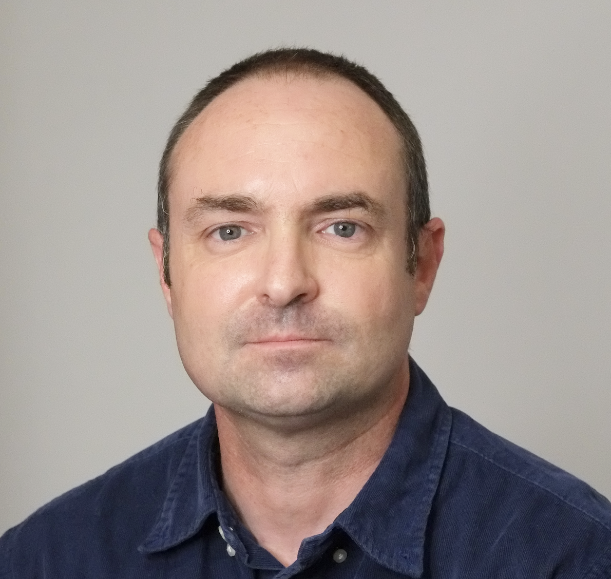

Full Professor · INSA Toulouse
Anthony Réveillac
Full Professor · Department of Mathematics
INSA Toulouse & Institut de Mathématiques de Toulouse
About
Full Professor in Probability, Mathematical Finance & Actuarial Sciences
AI Engineer
Head of the ModIA work-study master program.
Research interests
- Probability Theory
- Modelling and Risk Analysis in Insurance and Mathematical Finance
- Malliavin Calculus for Gaussian Fields and Counting Processes
- Hawkes and Volterra Processes
- Regularisation by Noise
- Backward Stochastic Differential Equations
- Information Theory
Affiliations
- INSA Toulouse — Département Génie Mathématique et Modélisation
- Institut de Mathématiques de Toulouse
Keywords
Loading keywords…